2. Solver Flowchart¶
Description of the solver object found in ngeoFE.solvers
{kind=link}
Flowchart describing the implemented incremental Backward Euler solver (General incremental solution loop). The first increment of each analysis step starts by applying the total incremental displacement
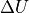 dependent on the time increment  and the total step time 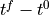. For the first increment, we zero the increment of the unknown vector 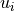.
Thus the the first iteration of the vector of its spatial derivatives 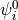 is also zero. We use values of stress 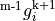 and state variables
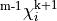 from the previously converged increment and the loading factor math:Delta U for the formation of the residual. The iterative global Newton-Raphson procedure
for the minimization of the residual happens inside LOOP 2. After the Newton-Raphson procedure has successfully converged a new increment m+1 begins.
We update the stress Voigt vector, 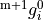, the state variable vector, 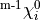, the solution vector, 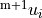, and advance the analysis time
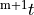.
and the total step time 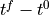. For the first increment, we zero the increment of the unknown vector 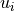.
Thus the the first iteration of the vector of its spatial derivatives 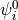 is also zero. We use values of stress 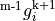 and state variables
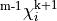 from the previously converged increment and the loading factor math:Delta U for the formation of the residual. The iterative global Newton-Raphson procedure
for the minimization of the residual happens inside LOOP 2. After the Newton-Raphson procedure has successfully converged a new increment m+1 begins.
We update the stress Voigt vector, 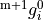, the state variable vector, 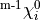, the solution vector, 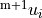, and advance the analysis time
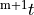.
{kind=link}
Flowchart describing the custom implemented Backward Euler solver. Loop 3: The iterative update. After the residual at the current iteration has been evaluated and the new iteration, 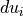, for the unknown vector is found, we update the increment of the unknown quantities 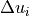, thus providing the new increment of the generalized strain vector 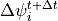. Next, we insert this together with the state variables at the previous iteration 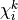 to the material algorithm in order to obtain the stress and state variables vectors at the current iteration 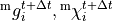 and the updated material moduli, 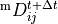. If the material algorithm has converged successfully and the global Newton-Raphson procedure has not reached the iteration limit for the minimization of the residual, we used the updated stress, state variables vectors and material moduli, 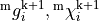 ,for the construction of the tangent stiffness matrix 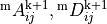 and the residual vector 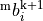.